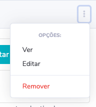
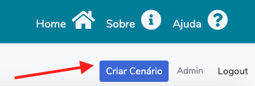

Esta ferramenta foi desenvolvida no contexto da unidade curricular “Pessoa dependente e os familiares cuidadores” do CLE(Curso Licenciatura Enfermagem) da ESEP(Escola Superior Enfermagem do Porto). Tem como objetivo adotar
uma nova forma de criar, partilhar e visualizar cenários. Esta página serve de guia para ajudar a utilizar a ferramenta. Apenas os professores da ESEP terão acesso e permissões para manipular cenários. Os alunos poderão
consultar os cenários existentes.
A ferramenta pode ser acedida através de qualquer dispositivo: “smartphone”, computador, portátil ou “tablet”.
Na página principal, poderá ver uma listagem de todos os cenários criados na ferramenta. As imagens seguintes representam os comandos disponíveis para professores relativos à manipulação de cenários dos dois tipos.
Para criar um cenário deve utilizar o botão “criar cenário” no topo a página principal. Pode também utilizar esta ligação.
Na página de edição de cenário pode preencher cada uma das áreas de texto, ícones de estado ou mesmo as barras de seleção para indicar o estado do paciente. Pode também fazer o “upload” de uma imagem à sua escolha, que gostaria
de ver associada. Nenhum dos campos é obrigatório, no entanto, aconselha-se o preenchimento do título e “resumo” de um cenário, para que o mesmo seja facilmente reconhecido na listagem principal.
Para gravar um cenário, utilize o botão no canto superior direito. Caso se trate de uma nova adição, uma caixa de dialogo irá propor a criação de um cenário cuidador, associado ao paciente que acabou de criar. Pode também fazer
o mesmo através da página principal.
É possível associar um cuidador a um cenário já existente através do símbolo mais “+” na página de listagem. O processo é muito semelhante ao anteriormente referido.
Para partilhar um cenário basta partilhar o URL, ou seja, a ligação do mesmo. Basta abrir um cenário já criado e copiar o texto na barra de endereços do seu navegador, no topo do ecrã, como mostra a imagem seguinte. A partilha
de cenários funciona através de um código identificador que é anexado no endereço da página.